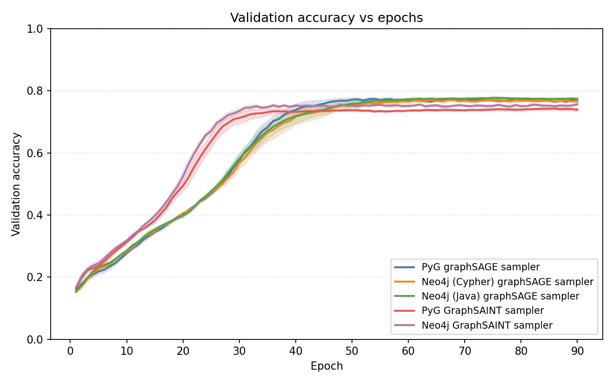
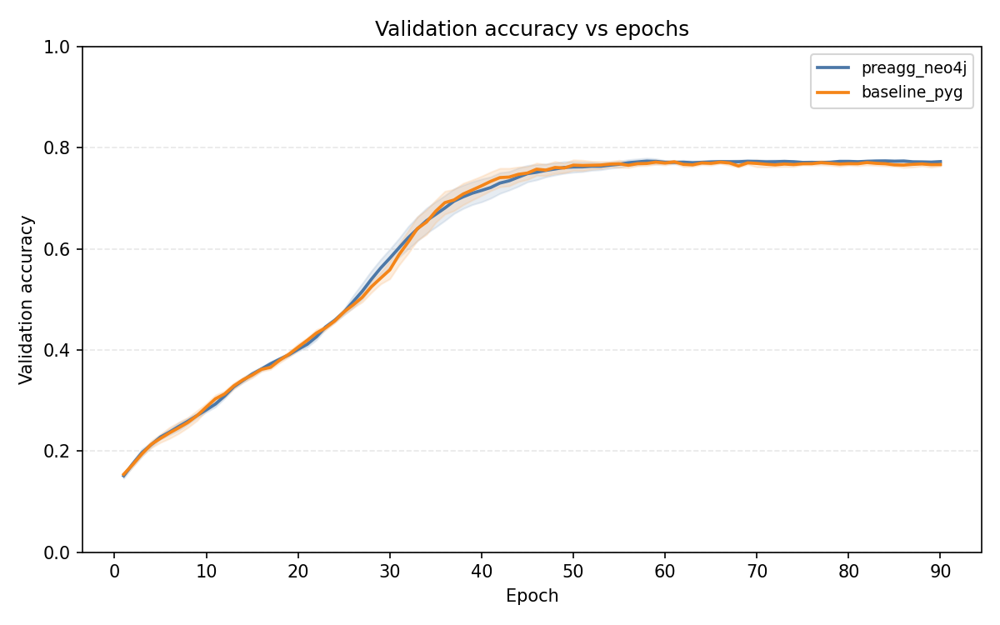
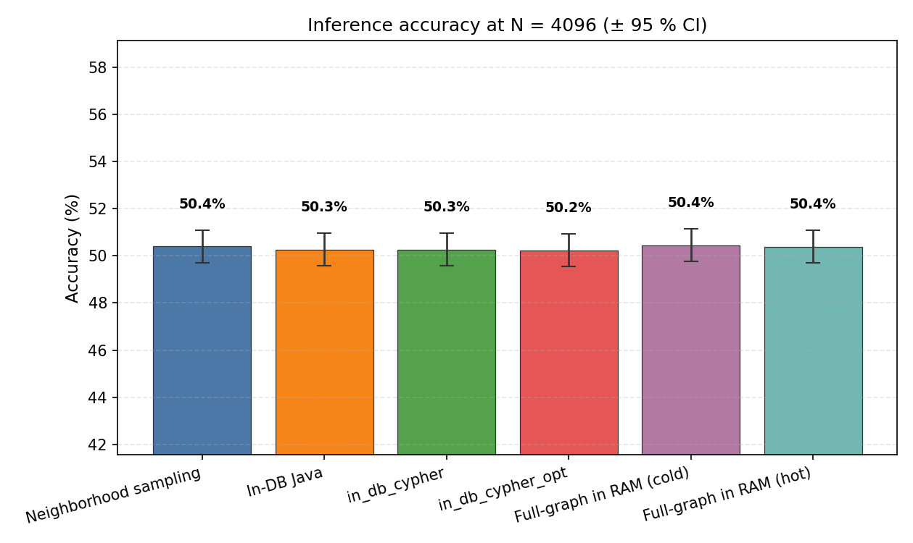
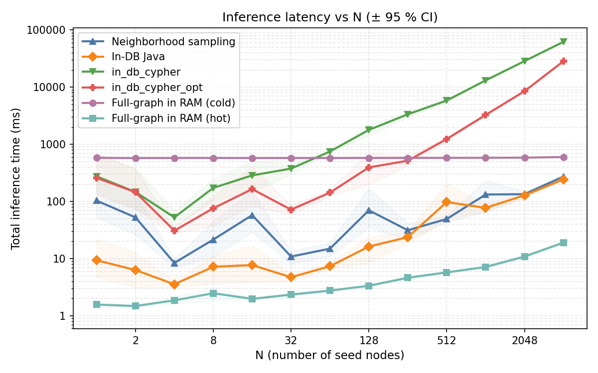

Victor Pekkari & Harry Wik
LTH Presentation
The model sees rows, i.i.d assumption. Citations/edges are ignored.
"The architecture of neural networks for graph data..."
Table: keyword_features
| paper_id | kw_graph | kw_neural | kw_protein | ... | label |
|---|---|---|---|---|---|
| 101 | 1 | 1 | 0 | ... | CS |
| 102 | 0 | 0 | 1 | ... | Bio |
| ... | ... | ... | ... | ... | ... |
Table: cites
| citer | cited |
|---|---|
| 101 | 102 |
| 103 | 101 |
| 104 | 101 |
| ... | ... |
Topological structure (Graph)
Message-passing uses these edges to flow information between related nodes.
Traditional ML (e.g., MLP):
Independent row-wise processing.
Message Passing (GNN):
Captures the neighborhood \(\mathcal{N}(v)\) and edge features \(\mathbf{e}_{vu}\).
Sample a subgraph around each seed node.
Fanout: \([3, 2]\)
for batch B of seeds: G_B ← Sample(B) ← NEW X_B, E_B ← Fetch(G_B) ← NEW ŷ ← forward pass L ← compute loss θ ← update weights
Sampling + fetching usually takes longer than the model computations.
(p1:Paper)-[:CITES]->(p2:Paper)
Directed edges representing influence between documents.
B-tree index on node IDs.
Essential for fast seed node lookups during sampling.
Supporting byte[] or f64[].
Stored as high-performance node properties.
Time-based Split (Train/Val/Test).
Labels integrated properties.
Graph held in RAM on the training machine.
for batch B of seeds: G_B ← Sample(B) X_B, E_B ← Fetch(G_B) ŷ ← forward pass L ← compute loss θ ← update weights
Validating that Neo4j samplers (UDP & Cypher) match PyG's native sampling.
\( \text{KL}(P \parallel Q) \) on Cora dataset
| P \ Q | PyG | Cypher | Java |
|---|---|---|---|
| PyG | 0.000 | 0.001 | 0.010 |
| Cypher | 0.001 | 0.000 | 0.010 |
| Java | 0.009 | 0.009 | 0.000 |
| P \ Q | PyG | Cypher | Java |
|---|---|---|---|
| PyG | 0.000 | 0.001 | 0.021 |
| Cypher | 0.001 | 0.000 | 0.021 |
| Java | 0.018 | 0.018 | 0.000 |
\( \text{KL}(P \parallel Q) \) on Cora dataset
| P \ Q | Cypher | PyG |
|---|---|---|
| Cypher | 0.00000 | 0.00159 |
| PyG | 0.00160 | 0.00000 |
| P \ Q | Cypher | PyG |
|---|---|---|
| Cypher | 0.00000 | 0.00160 |
| PyG | 0.00162 | 0.00000 |

Validation Accuracy vs. Epochs (Convergence)

Pre-aggregation Equivalence
for batch B of seeds: G_B ← Sample(B) X_B ← Fetch(G_B) H_B ← start forward pass (in DB) ŷ ← finish forward pass L ← compute loss θ ← update weights
Exploring where to run the model:
Large, self-contained queries.
Persistent Model State
spec.json: Defines the model layout.weights.bin: Stores pre-trained parameters.Identical to training pipeline logic.
Full In-Memory PyG


Questions?